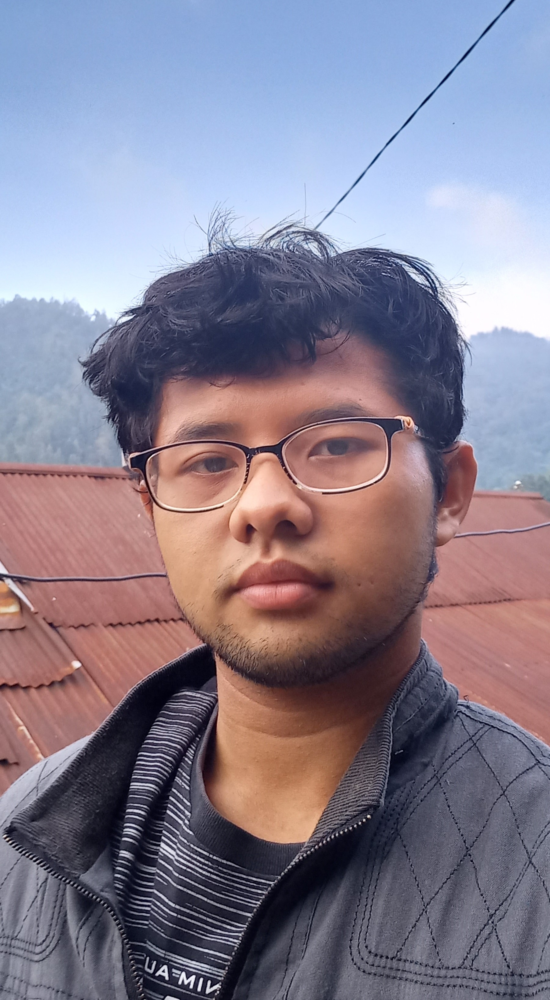

FOTOGRAPHER & EDITOR
Menciptakan Karya Visual yang Bermakna
Saya menghasilkan karya videografi dan editing yang estetis serta bermakna, membantu bisnis dan individu menyampaikan cerita mereka dengan visual yang memukau.

7+
Years of
Experience
Experience